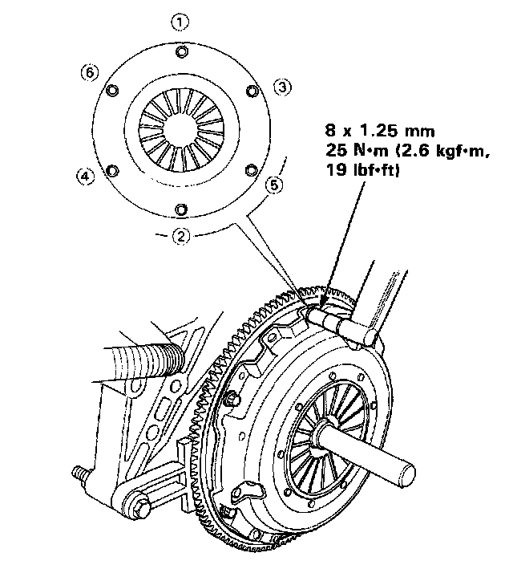

Pressure Plate
DIMENSIONSDiaphragm Spring Fingers Height:
Standard (New) 0.6 mm (0.02 inch)
Service Limit 0.8 mm (0.03 inch)
Warpage:
Standard (New) 0.03 mm (0.001 inch)
Service Limit 0.15 mm (0.006 inch)
TIGHTENING SPECIFICATIONS

8 x 1.25 mm 25 Nm (19 ft. lbs.)